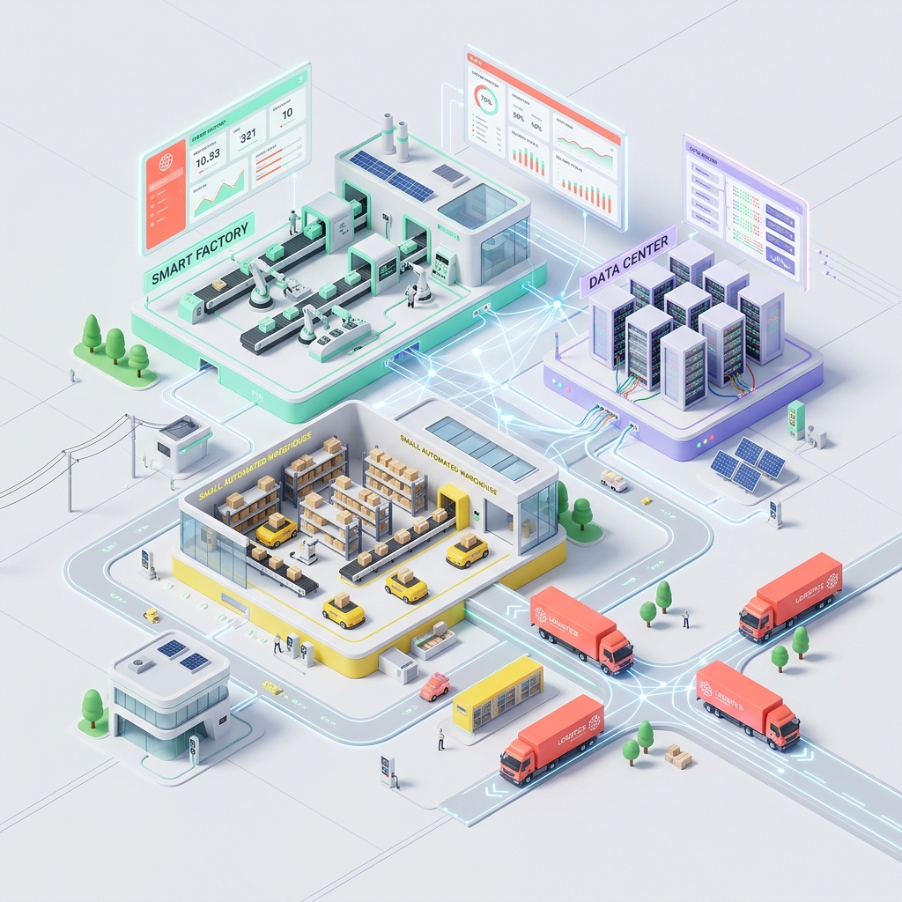

Driving Efficiency Through
Informatics & Optimization
I²O Lab is a virtual research hub dedicated to applying computer science and informatics frameworks to drive measurable efficiency in the industrial sector. Instead of focusing solely on theoretical models, we integrate robust information systems with advanced metaheuristic optimization algorithms to deliver actionable, prescriptive operational decisions.
Our core research targets complex bottlenecks within logistics networks, fleet routing, and supply chain management. By developing cutting-edge frameworks like Generative Engineering Optimization (GEO), we continuously aim to deliver adaptive digital solutions tailored to the dynamics of modern industrial workflows.

Smart Solutions
Data-driven & intelligent decision making.
Optimization
Advanced algorithms for real-world challenges.
Industrial Impact
Delivering measurable value to industry.
Open Collaboration
Connecting ideas, people, and opportunities.

Dr. Diva Kurnianingtyas, S.Kom.
Leading the vision and research direction of I²O Lab, with a focus on computational intelligence, optimization, and their transformative impact on industrial systems.
Contact PI